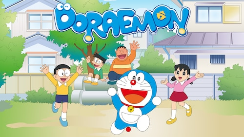
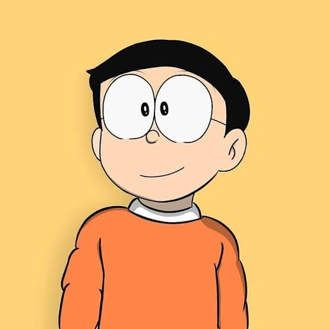
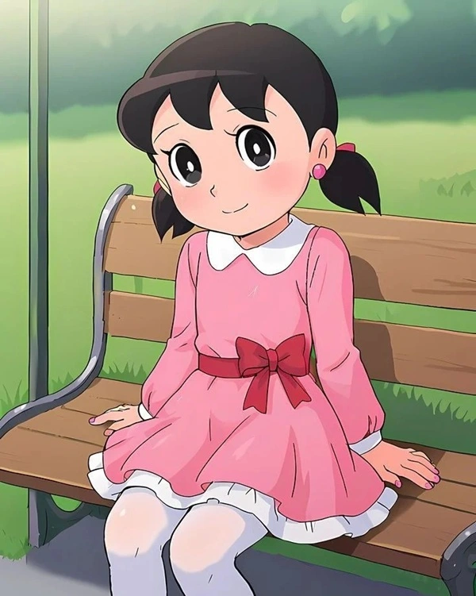
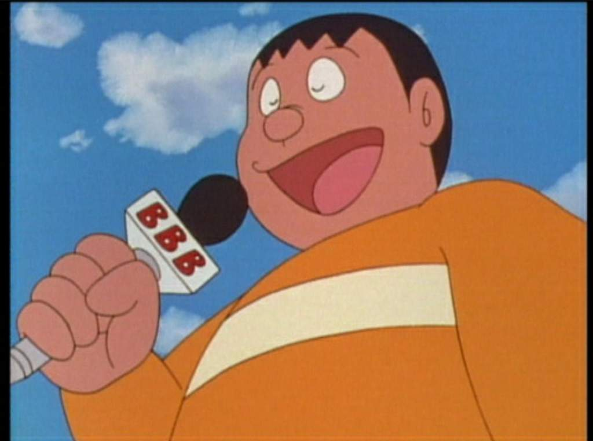
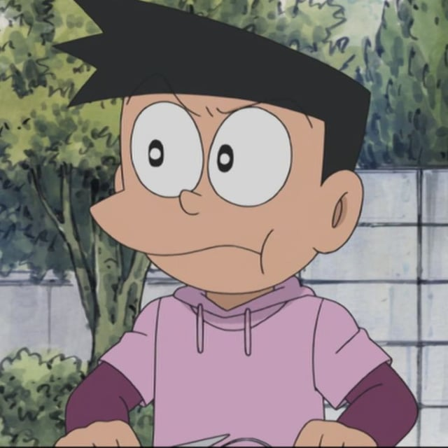

Doraemon
Robot cat from the 22nd century who helps Nobita with futuristic gadgets.

Replace this image file (images/doraemon-group.jpg) with your own large Doraemon group picture.




Doraemon is a blue robotic cat from the 22nd century who travels back in time to help a boy named Nobita. He carries a four-dimensional pocket filled with futuristic gadgets that can change almost any situation.
The stories mix everyday school life with science fiction ideas, time travel, flying gadgets, and fun adventures. Even with all the technology, the heart of the series is friendship, kindness, and learning from mistakes.
A caring robot cat who tries to guide Nobita in the right direction. His gadgets often solve problems but also create new ones when misused.
A clumsy and lazy boy who struggles with studies and sports. Despite his weaknesses, he has a good heart and a strong sense of loyalty.
Calm, kind, and talented. She encourages Nobita to do better and represents the balance and kindness in the friend circle.
The tough kid who loves singing and leading others. He can be rough but also shows bravery and support when it truly matters.
A wealthy boy who likes to show off new toys and trips. He often teams up with Gian but still joins the group adventures and learns important lessons.